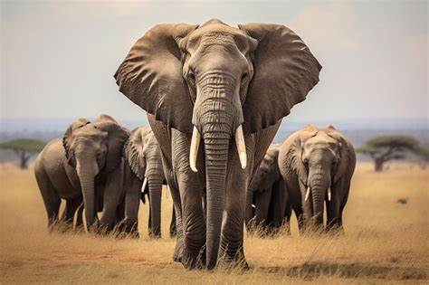

🐘 About Elephants
🌍 Where Do Elephants Live?
Elephants live in parts of Africa and Asia. They love areas with lots of trees, grass, and water.
👪 Elephant Families
Elephants live in groups called herds. A herd is led by the oldest female, called the matriarch. Baby elephants are called calves.
📏 How Big Are Elephants?
Elephants are the largest land animals on Earth! They can be up to 13 feet tall and weigh more than 14,000 pounds!
📏 Want to hear more about their social habits?
Elephants are known to "cry" and show signs of grief when a member of their herd dies — they often gather around the body, touch it gently with their trunks, and stay quiet for a while, almost like they’re mourning.
🔗 What Do Elephants Eat?
Elephants are plant-eaters that munch on grass, leaves, fruits, and bark—they can eat over 300 pounds of food in a day!
🤰 How Do Elephants Have Babies?
Elephants are pregnant for about 22 months—that’s the longest of any land animal! Baby elephants are called calves and they stay with their family for years.
🔗 How Do Elephants Talk?
Elephants use trumpets, rumbles, and even foot vibrations to communicate. They can talk to friends far away using sounds we can't even hear!
🎬 Elephants in Movies and Cartoons?
From Dumbo to Jungle Book, elephants are movie stars too! They show up in cartoons, books, and even video games as gentle giants everyone loves.
🧠 Miscellaneous Interesting Facts
Here are some fun and surprising things you might not know about elephants!
1️⃣ Elephants Can "Talk" with Their Feet
Elephants can communicate by sending low rumbling sounds through the ground. Other elephants feel these vibrations through their feet!
2️⃣ Their Ears Act Like Air Conditioners
Elephants flap their large ears to stay cool. Blood flows through the ear flaps, cooling off before it circulates through the rest of their body.
3️⃣ Elephants Can Recognize Themselves in a Mirror
This means they are one of the few animals with self-awareness—a sign of high intelligence!